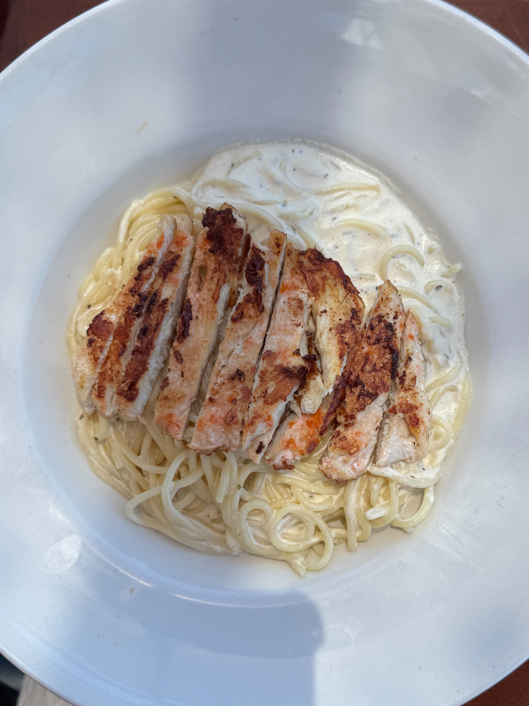
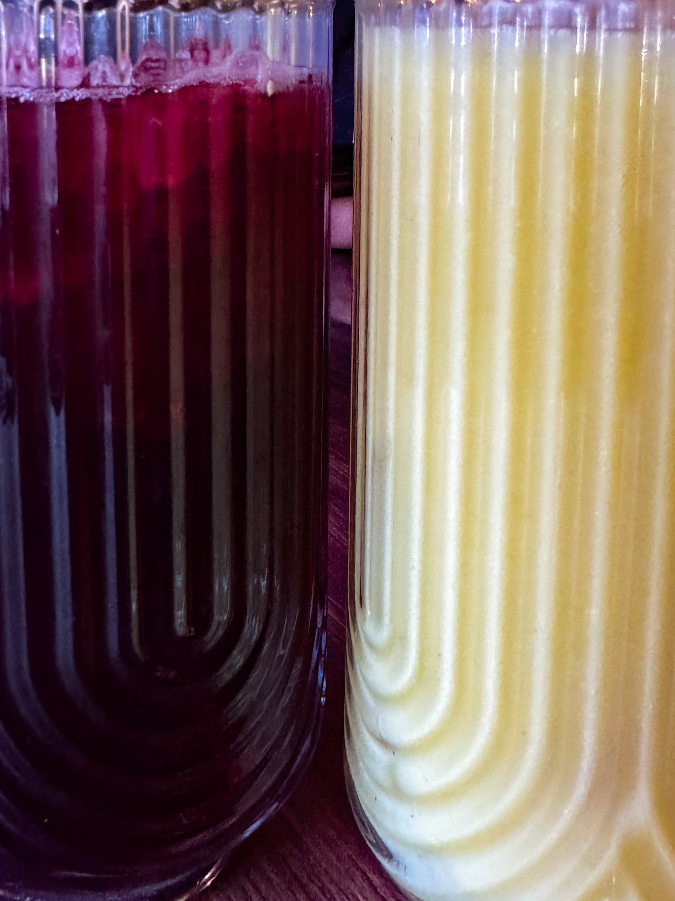
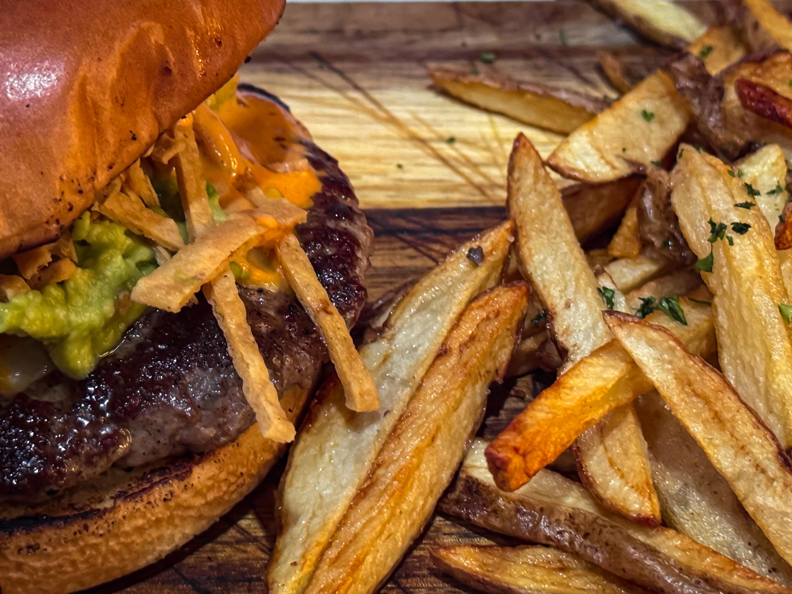
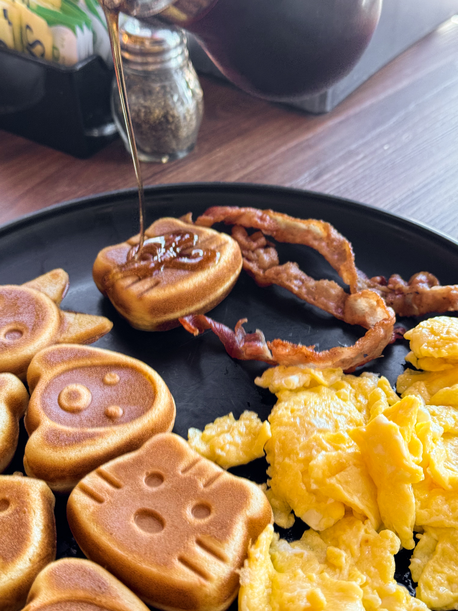
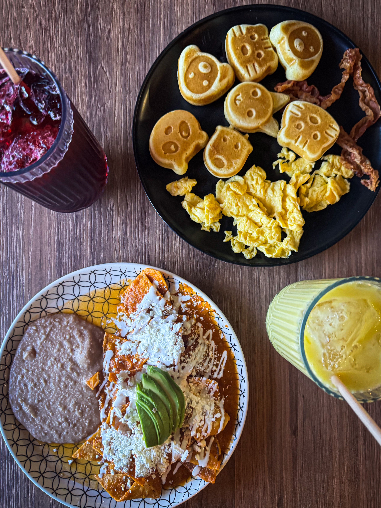
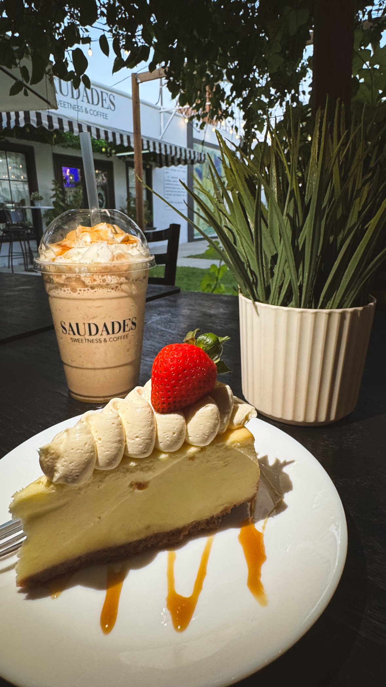

Pasta
A favorite worth remembering.

Strawberries
A little something sweet.

Something to Sip
Guava juice and Jamaica.
A little taste of everything I like to eat. From my favorite comfort foods to sweet treats and new places, here's a little look at what's on my plate. Missing some, but I need to be more consistent with picturing my cravings.

One of my all time go to choices. When in doubt about what to order, I always lean toward a good ABC burger.
My verdict: Always a good choice!

These cute animal shaped pancakes will brighten anyone's day! Perfect for kids or anyone who likes to end breakfast with something sweet.
Location: La Pergola

Chilaquiles are my go to breakfast. A classic choice that never disappoints!
Location: La Pergola

A good cheesecake and coffee with company. The cheesecake was perfect, and the atmosphere was just as good.
Location: Saudades

A favorite worth remembering.
A little something sweet.

Guava juice and Jamaica.
I'm just a girl who likes finding new places, trying different dishes, and capturing the little moments that make a meal memorable.